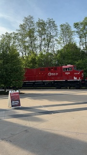
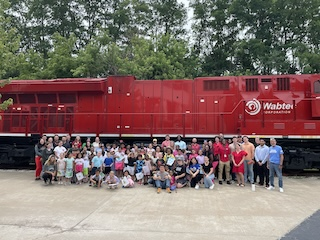
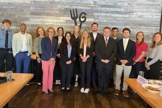
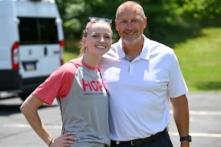
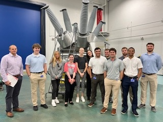

Documented changes made to the portable emissions fuel cart
Created drawings in VISIO of the portable emissions trailer
Aided in shift change between 1st and 2nd shift
Volunteered with Wabtec's Edison STEM Day
Volunteered with Penn State Behrend and Wabtec Girls for a STEAM summer camp
Here are some images from my time at Wabtec:

an image of the 2024 AMCC Championship

an image from volunteering at Wabtec's Edison STEM Day
Mitsubishi Electric Power Products Inc.
2023 Quality Engineering Intern
Analyzed data involving motor currents and spring compression settings
Improved data quality by creating motor current range requirements and implementing a new testing system
Saved the shop time and money by recommending new compression settings for trip and close springs
Worked alongside many engineers and Japanese expatriates
Volunteered with MEPPI's HOPE commitee, running a cornhole tournament
Here are some images from my time at MEPPI:

an image of the interns at a lunch and learn with MEPPI's CEO and President

an image of me and my dad, an accounting manager at MEPPI, at the cornhole tournamnet

an image of the interns getting a tour of one of the shops